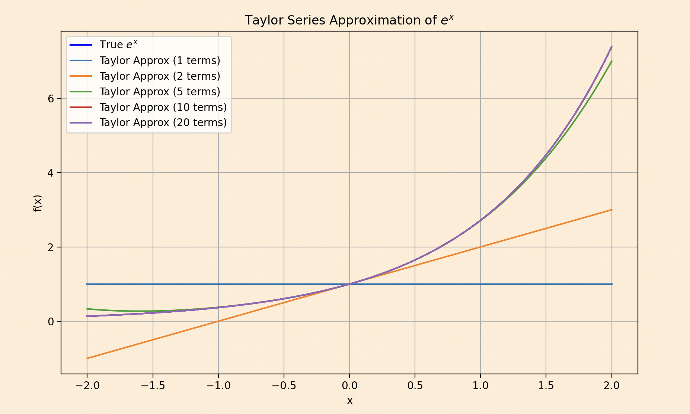
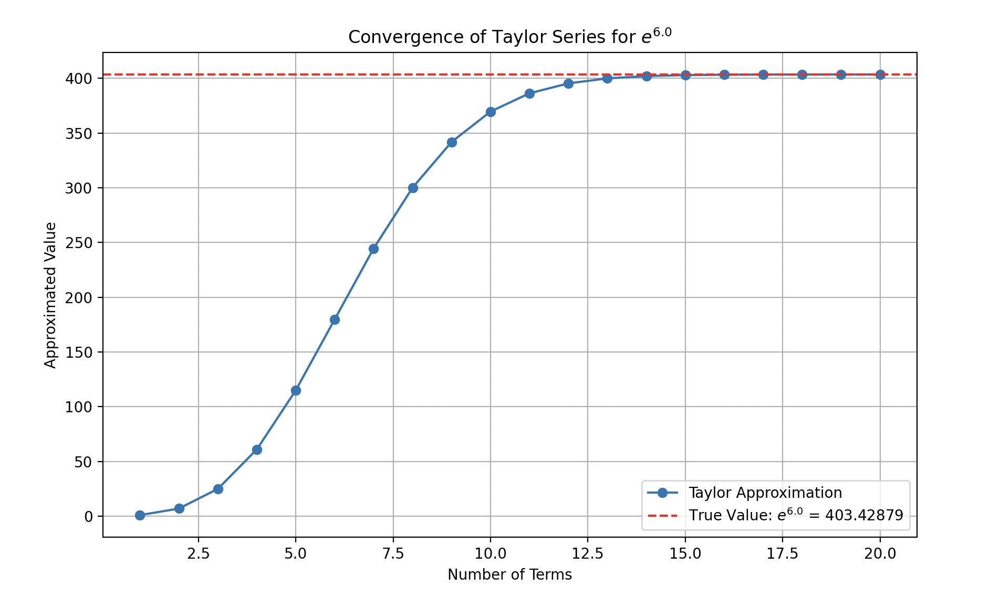

The more research paper related to ML I read the more I see these topics out here, will try to explain everything I have ever learned or implemented through this.
Today we will talk about one of the most important questions (I have ever came across is) How do we prove that a taylor series actually converges to the function it's supposed to represent ??
This isn't just academic curiosity for me but in machine learning taylor approximations constantly, from optimization algorithms to neural network activations. Understanding when and why these approximations work is important for you and me to learn build a well conditioned system.
Taylor Series is something that simplifies complex functions like \(sin(x)\) or taking exponential like \(e^x\) into a sum of simple polynomial terms (like \(x, x^2, x^3\) and so on).
In simple words this is like a single point on the function, like \(x=0 \) , and you want to describe the whole function just by knowing what’s happening right there. The Taylor series uses the function’s value, its slope (first derivative), its curvature (second derivative), and higher derivatives at that point to build a polynomial that mimics the function. The formula goes something like this. \[f(x) \approx f(a) + f'(a)(x - a) + \frac{f''(a)}{2}(x - a)^2 + \frac{f'''(a)}{6}(x - a)^3 + \cdots\] If the point is a=0 , it’s called a Maclaurin series, so the Maclaurin series for \(e^x\) is \[e^x \approx 1 + x + \frac{x^2}{2} + \frac{x^3}{6} + \cdots\] Add more terms, and the polynomial gets closer to real \(e^x\), especially near \(x = 0\).
Does this polynomial, as you keep adding terms, actually become the function ?? Convergence describes whether the Taylor series actually equals the function as you add more terms. A series converges if the sum of its terms approaches the function’s value as the number of terms goes to infinity. The interval of convergence is the range of ( x )-values where this happens. ...
This is what convergence looks like we have taken 6.0 as the x value so according to first rule it will converge.
Okay so coming back to our main question which is
To determine if a Taylor series converges to the function, we need to check two things:
The radius of convergence is found using the ratio test for the series \(\sum a_n x^n\), where \( a_n = \frac{f^{(n)}(a)}{n!} \). If the limit \[ \lim_{n \to \infty} \left| \frac{a_{n+1}}{a_n} \right| = L, \] exists, the series converges for \( |x| < \frac{1}{L} \). If ( L = 0 ), the series converges for all (x).
For \( e^x \), the series is \( \sum_{n=0}^{\infty} \frac{x^n}{n!} \), so \( a_n = \frac{1}{n!} \). Compute the ratio: \[ \left| \frac{a_{n+1}}{a_n} \right| = \frac{\frac{1}{(n+1)!}}{\frac{1}{n!}} = \frac{n!}{(n+1)!} = \frac{1}{n+1} \to 0 \text{ as } n \to \infty. \] Since ( L = 0 ), the series converges for all ( x ). However, convergence alone isn’t enough—we need to ensure the sum equals \( e^x \).
Moving onto our next question we have
To prove the Taylor series equals the function, we use the remainder term. The ( n )-th partial sum of the Taylor series is: \[ s_n(x) = \sum_{k=0}^{n} \frac{f^{(k)}(a)}{k!} (x - a)^k. \]
The remainder is \( R_n(x) = f(x) - s_n(x) \). For the series to equal \( f(x) \), we need: \[ \lim_{n \to \infty} R_n(x) = 0. \] Lagrange’s form of the remainder is: \[ R_n(x) = \frac{f^{(n+1)}(c)}{(n+1)!} (x - a)^{n+1}, \]
where \( c \) is some point between \( a \) and \( x \). For \( e^x \) at \( a = 0 \) ==> \( f^{(n+1)}(x) = e^x \), so \( f^{(n+1)}(c) = e^c \). The remainder is: \[ R_n(x) = \frac{e^c}{(n+1)!} x^{n+1}, \] where \( c \) is between 0 and \( x \). Since \( e^c \leq e^{|x|} \) (as \( c \leq |x| \)), we have: \[ |R_n(x)| \leq \frac{e^{|x|}}{(n+1)!} |x|^{n+1}. \] As \( n \to \infty \), \( (n+1)! \) grows factorially, so \( |R_n(x)| \to 0 \) for any fixed \( x \). Thus, the series converges to \( e^x \).
The approach applies to \( \sin(x) \) and \( \cos(x) \). Let’s derive the Maclaurin series for \( \sin(x) \):
The series is \[ \sin(x) = \sum_{n=0}^{\infty} \frac{(-1)^n x^{2n+1}}{(2n+1)!} = x - \frac{x^3}{3!} + \frac{x^5}{5!} - \cdots. \] For convergence, apply the ratio test to the non-zero terms \( a_n = \frac{(-1)^n}{(2n+1)!} x^{2n+1} \): \[ \left| \frac{a_{n+1}}{a_n} \right| = \frac{|x|^{2n+3} / (2n+3)!}{|x|^{2n+1} / (2n+1)!} = \frac{|x|^2}{(2n+3)(2n+2)} \to 0. \]
The series converges for all \( x \). For the remainder, \( |f^{(n+1)}(c)| = |\sin(c)| \leq 1 \) or \( |\cos(c)| \leq 1 \), so: \[ |R_n(x)| \leq \frac{|x|^{n+1}}{(n+1)!} \to 0. \] Similarly, for \( \cos(x) \), the series is: \[ \cos(x) = \sum_{n=0}^{\infty} \frac{(-1)^n x^{2n}}{(2n)!}, \] with the same convergence properties. Thus, both converge to their functions for all \( x \).
Note the pattern : \(e^x\), sin(x), and cos(x)
all have the property that their derivatives don't grow too fast. For
\(e^x\), the derivatives grow exponentially, but the factorial in the
denominator grows even faster. For sin(x) and cos(x), the derivatives are
bounded by 1.
Moving to our next question which you might have ...
Some functions have Taylor series that converge only within a limited interval or not to the function itself. For example, consider \( f(x) = \frac{1}{1+x^2} \). Its Maclaurin series is: \[ \sum_{n=0}^{\infty} (-1)^n x^{2n}, \] which converges for \( |x| < 1 \) (by the ratio test). Outside this interval, the series diverges, unlike the function, which is defined for all \( x \).
The graph will clearly illustrate how the Maclaurin series approximates the function well within \( |x| < 1 \).
Another example is \( f(x) = e^{-1/x^2} \) for \( x \neq 0 \), and \( f(0) = 0 \). All derivatives at \( x = 0 \) are zero, so the Taylor series is identically zero, but \( f(x) \neq 0 \) for \( x \neq 0 \). Thus, the series doesn’t represent the function except at \( x = 0 \).
But
In neural networks, we often use activation functions like \( \tanh(x) \) or sigmoid functions. These can be computed using Taylor series, but there's a clever trick: instead of computing the series directly, we often use the fact that these functions satisfy simple differential equations. For instance, the sigmoid function \( \sigma(x) = \frac{1}{1+e^{-x}} \) is related to \( \tanh(x) \) by \( \sigma(x) = \frac{1+\tanh(x/2)}{2} \). And \( \tanh(x) \) can be computed efficiently using its Taylor series, especially for small \( x \).
Hope I was able to add value to your today's learning goal !! Happy Learning ..